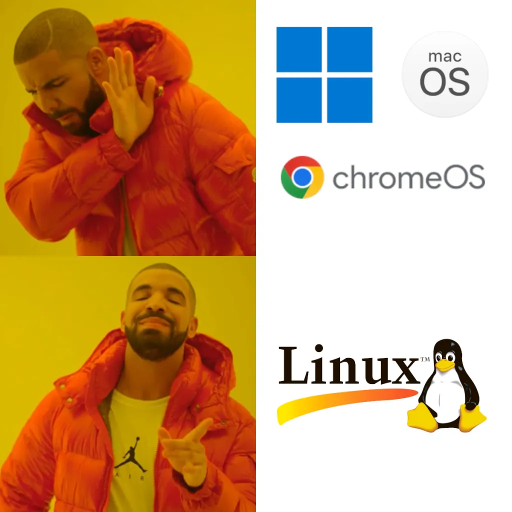

Jak już mamy zdecydować się na dany system, to nasuwa nam się jedno pytanie: co wybrać? Do dyspozycji mamy głównie linuxa i windowsa, więc porównamy oba systemy:
1. Windows w przeciwieństwnie do linuxa może posiadać pakiet office.
2. Linux działa szybciej niż windows i złużywa mniej zasobów
3. Na linuxie są lepsze narzędzia do programowania i pracy na komputerze
4. Większość gier na razie działa tylko na windowsie
NALEŻY WYBRAĆ TAKI SYSTEM, KTÓRY SPEŁNIA TWOJE OCZEKIWANIA
